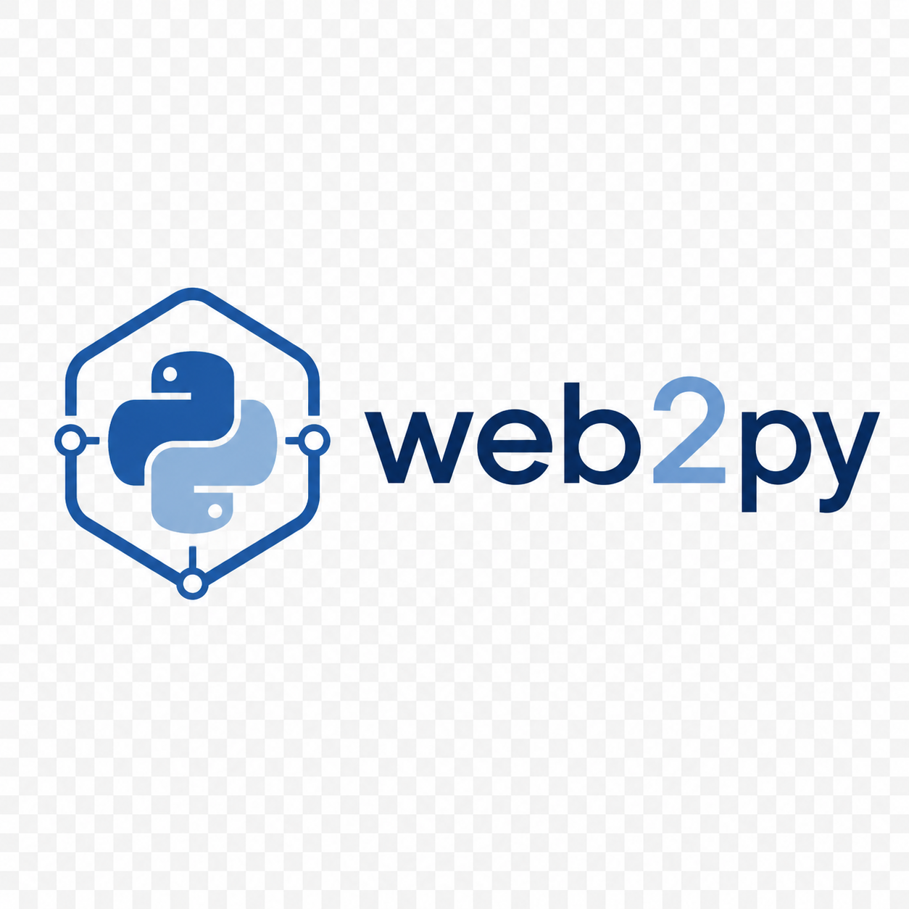
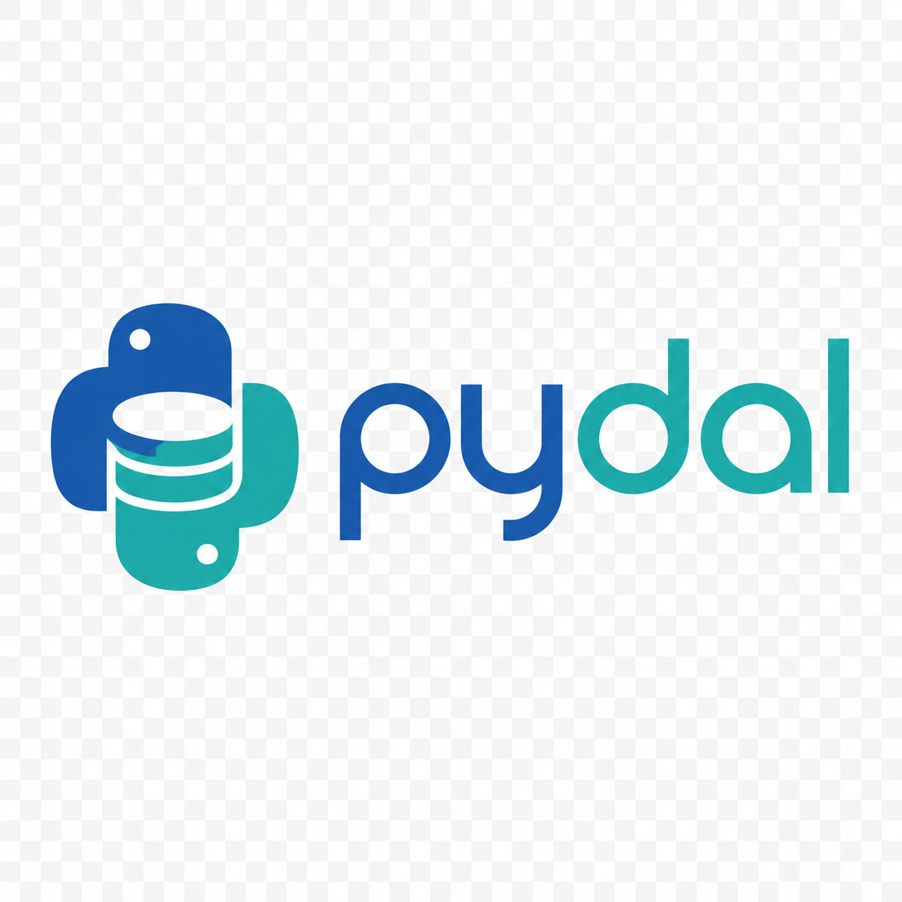

Massimo Di Pierro
Scientist, Engineer, Teacher
Ph.D. in High Energy Physics and former manager of simulations at SpaceX. Professor of Computer Science at DePaul University, UC Santa Cruz, and Chapman University, and Director of the Master of Science in Computational Finance. Creator of HiroSim and py4web, with expertise in numerical algorithms, parallel computing, and their applications in science and finance. Member of the Python Software Foundation and author of numerous scientific publications and books.
Technologies

web2pyAward Winning Legacy Framework for Web Application Development
pydalA database abstraction layer that writes SQL for you rigxBuild system based on Nix, configurable in TOML, for hermetic reproducible builds, tests, capsules, and testbeds
HiroSimState of art simulation stack including flight computer specification languages, hardware abstraction layer, sensor/actuator models, and telemetry visualizer. Built for AI.
rigxBuild system based on Nix, configurable in TOML, for hermetic reproducible builds, tests, capsules, and testbeds
HiroSimState of art simulation stack including flight computer specification languages, hardware abstraction layer, sensor/actuator models, and telemetry visualizer. Built for AI.
Books


Publications
From old to recent. Only published papers, not including technical reports.
- 1996 — Mass confinement and CP invariance in the Seiberg Witten model Physics Letters B
- 1998 — A lattice study of spectator effects in B mesons
- 1998 — Towards a lattice determination of the B B pi coupling
- 1999 — An exploratory lattice study of spectator effects in inclusive decays of the b baryon Physics Letters B
- 1999 — Spectator effects in inclusive decays of beauty hadrons Nuclear Physics B Proceedings Supplements
- 2000 — B lifetimes from lattice simulations Nuclear Physics B Proceedings Supplements
- 2000 — Lattice determination of the B B pi coupling
- 2000 — The second moment of pions distribution amplitude
- 2001 — Excited heavy light systems and hadronic transitions
- 2001 — Hadronic decays of exited heavy mesons
- 2001 — Matrix distributed processing a set of C tools for implementing generic lattice computations on parallel systems Computer Physics Communications
- 2002 — FermiQCD A tool kit for parallel lattice QCD applications Nuclear Physics B Proceedings Supplements
- 2002 — Nonperturbative tuning of O a2 improved staggered fermions Nuclear Physics B Proceedings Supplements
- 2003 — A bird eye view of matrix dirtibuted processing
- 2003 — Charmonium with three flavors of dynamical quarks Nuclear Physics B Proceedings Supplements
- 2003 — The second moment of the pion light cone wave function 2003 Nuclear Physics B Proceedings Supplements
- 2004 — Ds spectrum and leptonic decays with Fermilab heavy quarks and improved staggered light quarks Nuclear Physics B Proceedings Supplements
- 2004 — High precision lattice QCD confronts experiment
- 2004 — Properties of charmonium in lattice QCD with 2 1 flavors of improved staggered sea quarks Nuclear Physics B Proceedings Supplements
- 2004 — Semileptonic decays of D mesons in unquenched lattice QCD 2004 Nuclear Physics B Proceedings Supplements
- 2004 — www.fermigcd.net Nuclear Physics B Proceedings Supplements
- 2005 — An Algorithmic Approach to Quantum Field Theory
- 2005 — B and D meson semileptonic decays in three flavor lattice QCD
- 2005 — Charmed meson decay constants in three flavor lattice QCD
- 2005 — Lattice QFT with FermiQCD (MORE)
- 2005 — Leptonic decay constants fD
- 2005 — On Ranking Schemes and Portfolio Selection
- 2005 — Onium masses with three flavors of dynamical quarks
- 2005 — Predictions from Lattice QCD
- 2005 — Semileptonic D to pi
- 2006 — A study of the Bs B s mass and width difference in 21 flavor lattice QCD
- 2006 — Matrix Distributed Processing and Applications
- 2006 — Monte Carlo Risk Management
- 2006 — Predictive Lattice QCD
- 2006 — Update on onium masses with three flavors of dynamical quarks
- 2007 — A Determination of the B0s and B0d mixing parameters in 21 lattice QCD
- 2007 — A Visualization Toolkit for lattice Quantum Chromodynamics
- 2007 — Analysis of ranking factors for a risk averse investor in a non gaussian world
- 2007 — The decay constants fB and fD from three flavor lattice QCD
- 2007 — Visualizations for lattice qcd
- 2008 — Portfolio rankings with skeness and kurtosis
- 2009 — Analysis and visualization tools for Lattice QCD
- 2009 — Progress on charm semileptonic form factors from 21 flavor lattice QCD
- 2009 — Quarkonium mass splittings with Fermilab heavy quarks and 21 flavors of improved staggered sea quarks
- 2009 — The B semileptonic form factor from three flavor lattice QCD A Model independent determination of Vub
- 2009 — The BD form factor at zero recoil from three flavor lattice QCD A Model independent determination of Vcb
- 2009 — The Ds and D Leptonic Decay Constants from Lattice QCD
- 2009 — Visualization as a tool for understanding QCD evolution algorithms
- 2009 — Visualization of semileptonic form factors from lattice QCD
- 2010 — mc4qcd Online Analysis Tool for Lattice QCD (CODE, MORE)
- 2010 — Quarkonium mass splittings in three flavor lattice QCD
- 2010 — Vis Online Analysis Tool for Lattice QCD
- 2010 — Visualization Workflow for Lattice QCD
- 2011 — B and D mesons decay constants
- 2011 — Effects of skewness and kurtosis on portfolio rankings
- 2011 — Making QCD Lattice Data Accessible and Organized through Advanced Web Interfaces
- 2011 — Pattern derivatives
- 2011 — Tuning Fermilab heavy quarks in 2+1 flavor lattice QCD with application to hyperfine splittings
- 2011 — web2py for Scientific Applications (CODE, MORE)
- 2012 — Concurrency in Modern programming languages
- 2012 — Neutral B meson mixing from three flavor lattice quantum chromodynamics
- 2013 — OpenCL Programming using Python Syntax (CODE)
- 2013 — QCL OpenCL metaprogramming for lattice qcd
- 2013 — The new gauge connection at NERSC (LIVE)
- 2014 — Portable Parallel Programs with Python and OpenCL
- 2017 — Social Quizzes with Scuiz (LIVE)
- 2017 — What is the Blockchain (CODE)
- 2018 — The Raise of Javascript
- 2018 — Toy Vision-Guided 3D Robotic Arm in JavaScript (CODE)
- 2018 — Reputation Systems for News on Twitter: A Large-Scale Study (LIVE)